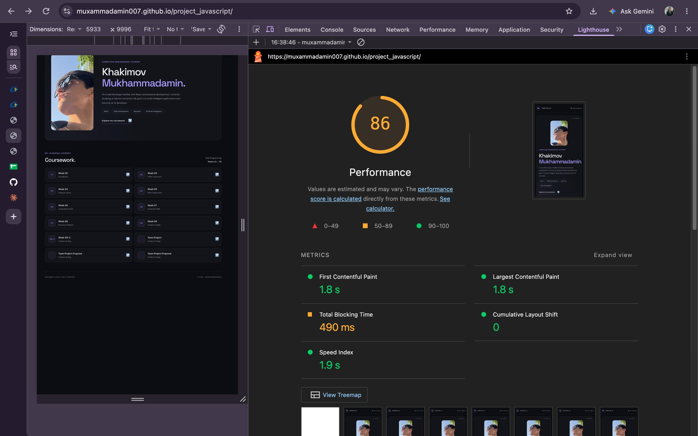
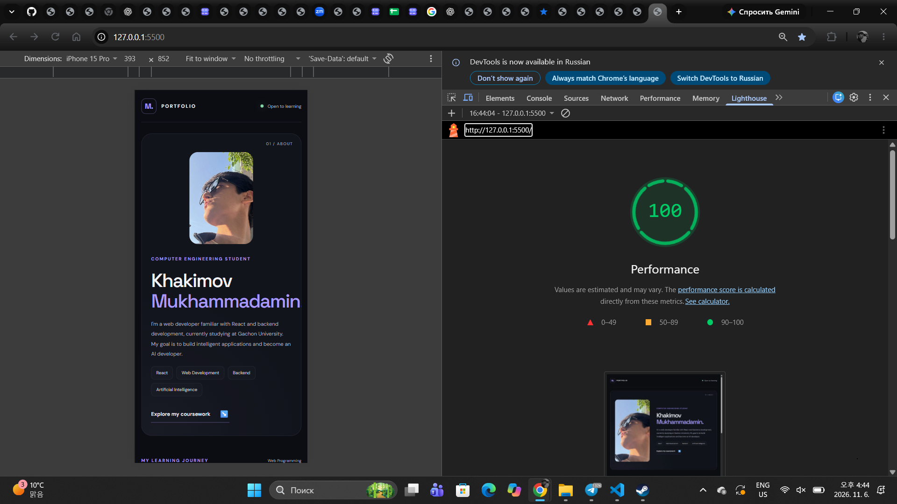

Website Performance Optimization Report
1. Introduction
I used Google Lighthouse (Performance category) to test the home page of my portfolio. My page was already fast, so to show the effect of each fix clearly I made a deliberately slowed copy of it, with problems the lecture warns about, and compared it with the fixed page. I found two problems and made three improvements.
2. The Problems
You can open the slowed copy of the home page and test it yourself. Lighthouse reported these problems on it:
Problem 1: A font stylesheet that blocks rendering
The page loaded a Google Fonts stylesheet in the head. A stylesheet in the head blocks the first paint, so visitors saw a blank page until it downloaded. It also asked for 15 font weights that the page never uses, which made the download bigger.
Code in the slowed copy<link href="https://fonts.googleapis.com/css2?family=Roboto:wght@100;300;400;500;700;900
&family=Poppins:wght@100;200;...;900&display=swap" rel="stylesheet">Problem 2: A slow script in the head with no defer
A script in the head ran a long calculation. A normal script stops the browser from reading the rest of the HTML until it has finished, so the page could not appear. Lighthouse shows this as a long main-thread task and a higher Total Blocking Time.
Code in the slowed copy<script>
for (var n = 2; n < LOAD; n++) { ...slow loop... }
</script>3. Before the Fixes
Lighthouse performance score for the slowed copy of the home page.

4. After the Fixes
Lighthouse performance score for the fixed home page.

5. What Was Fixed
I removed the font stylesheet that blocked the first paint and the slow script that held the page up. I also told the browser to load my profile photo first, because it is the biggest thing at the top of the page.
Fix 1: Removed the render-blocking font stylesheet
The page does not need the Google Fonts files, so I removed the link. This also removes the request to another
website and the unused weights. If a custom font is needed, load it with rel="preload" so it
does not block the page, and ask only for the weights you use.
<link href="https://fonts.googleapis.com/css2?...15 weights..." rel="stylesheet">(removed)Fix 2: Removed the blocking script
The page does not need the script, so I removed it and the browser can show the page straight away.
A script that is needed should use defer, which lets the HTML keep loading while the file downloads.
<script> ...slow loop... </script>(removed; for a needed script use: <script src="app.js" defer></script>)Fix 3: Load the profile photo first
The profile photo is the largest element at the top of the page, so it decides the Largest Contentful Paint.
I added a preload hint and fetchpriority="high" so the browser starts downloading it early, and
decoding="async" so decoding does not hold up other work.
<img src="photo_2026-10-04_17-32-28.jpg" alt="..."><link rel="preload" as="image" href="photo_2026-10-04_17-32-28.jpg" fetchpriority="high">
<img src="photo_2026-10-04_17-32-28.jpg" alt="..." fetchpriority="high" decoding="async">6. Results
I counted what the browser has to do before it can show the home page.
| Measure | Before | After | Change |
|---|---|---|---|
| Render-blocking font stylesheets | 1 | 0 | Removed |
| Blocking scripts in the head | 1 | 0 | Removed |
| Google Fonts weights requested | 15 | 0 | 15 fewer |
| Main photo load priority | Default | High | Loads earlier |
7. Conclusion
These changes let the page start to appear sooner and load the most important image first. The page looks the same as before, and Lighthouse shows a higher performance score.